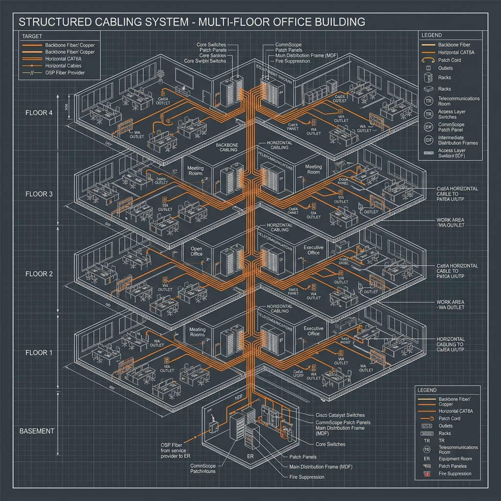
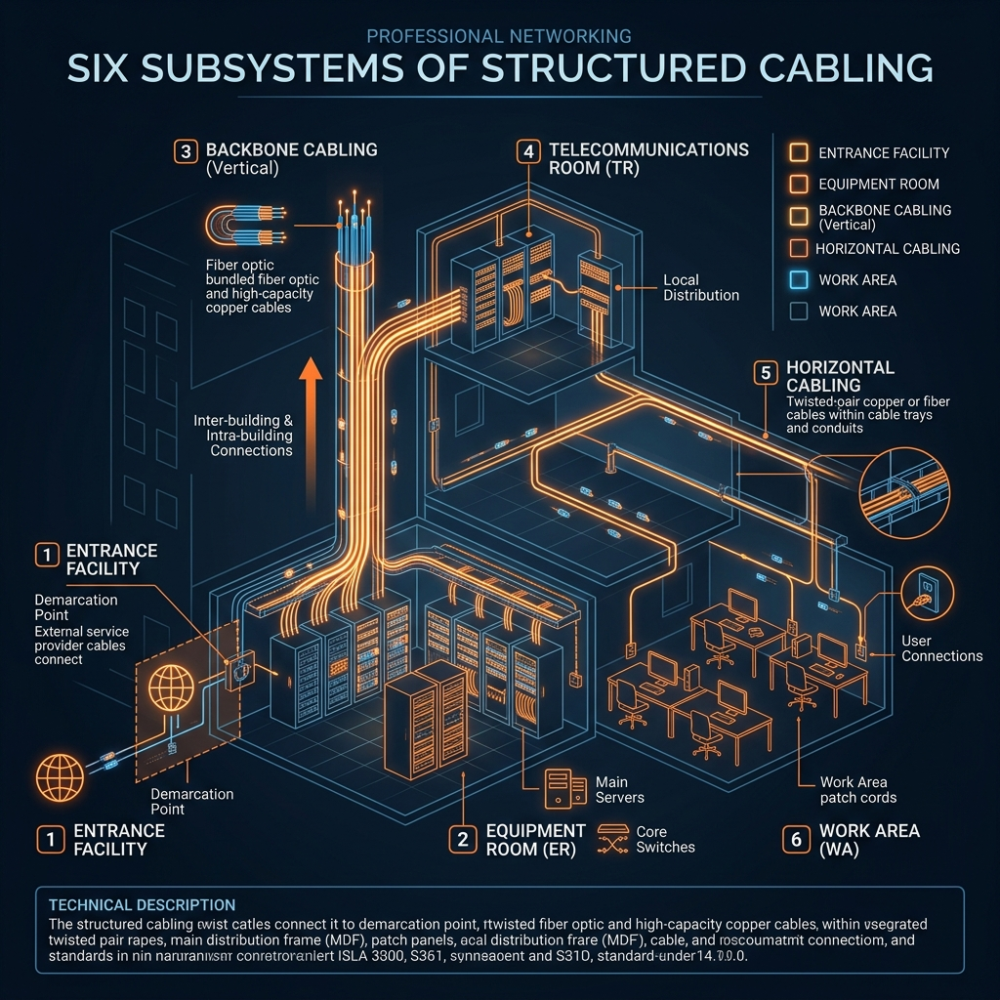
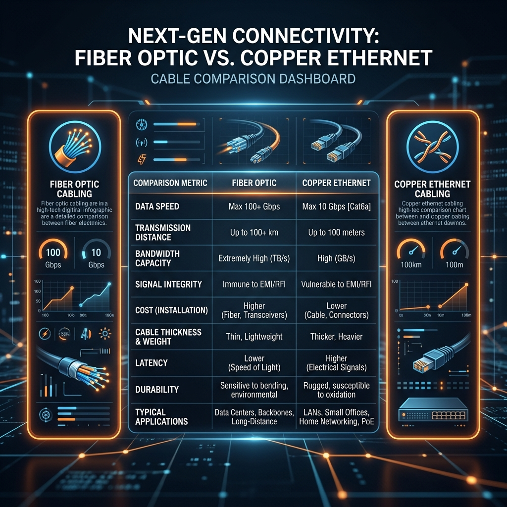

Modern businesses need reliable network infrastructure to support their operations effectively. Proper planning ensures your communications systems scale with business growth demands and technology needs change over time.
Structured cabling installation creates an organized foundation for all end devices within any facility environment. Unlike point-to-point wiring chaos, this centralized approach connects workstations in a flexible manner without disrupting daily workflows when modifications arise later.

What is structured cabling and its components
Structured cabling replaces disorganized point-to-point wiring with a centralized, well-labeled infrastructure across building floors. This fundamental approach reduces human errors that cause accidental network disconnects during maintenance or troubleshooting activities throughout weekdays.
The six subsystems comprise all low-voltage components in your commercial network deployment plan today. Horizontal cabling connects telecommunications enclosures to individual work area outlets across ceiling spaces and interior wall routes regularly occupied by users on each floor level of any office building structure.

Design considerations for commercial buildings
Backbone vertical cabling links central equipment rooms to telecommunications corridors across multiple floors or separate building structures on campus properties with centralized switching gear positioned at main distribution frames.
Entrance facility infrastructure represents where external service provider cables demarcate from your private internal network systems within the building entrance location. This critical junction typically includes surge protection devices, cable entry conduits, and grounding components that guard against electrical failures during severe weather or power grid disturbances affecting entire regions.
Cable type selection for future needs
Telecommunications rooms house switching equipment and patch panels that serve as the central coordination hub managing all cabling pathways throughout an entire commercial building structure with multiple floors requiring regular connectivity testing protocols. Equipment rooms concentrate server racks and mainframe systems in controlled temperature environments where cooling infrastructure supports continuous operation without system degradation from heat buildup or humidity fluctuations affecting hardware reliability.
Work area components represent all network connections that end users directly interact with daily using computers, phones, printers and security camera systems positioned at their individual desk locations throughout office spaces or retail store environments with flexible workspace arrangements supported by properly terminated wall jack outlets.
Planning your structured cabling infrastructure
Installation best practices and standards compliance
Installing Siemon PoE PowerGUARD products enables remote powering of devices through Ethernet cables delivering up to 100W for AV displays, video walls, and LED lighting systems while reducing AC power installation costs by approximately 75 percent during initial build phases where conduits already exist before drywall.
Route cables efficiently through ceiling plenum spaces or wall chase areas with cable staples spaced every four feet maximum to prevent sharp bends exceeding the minimum bend radius that could damage fiber optic cables or copper wire insulation layers inside twisted-pair Ethernet cabling systems rated for 10Gbps and higher data transfer speeds.
Testing requirements for cabling integrity
Label all terminated cables systematically using color-coded tags or barcode scanners integrated with cable management software that maintains accurate documentation of port assignments, cable lengths, manufacturer specifications and tested performance metrics including wire map results. Terminate copper cables properly according to TIA/EIA-568-D Cat6a or Cat7 specifications while maintaining strain relief at connection points where patch panels terminate horizontal runs into main distribution frame infrastructure positioned in dedicated telecommunications rooms.

Maintenance schedules and documentation standards
Testing and verification confirms cable performance meets industry certifications before full network operations begin in production environment configurations where downtime costs reach thousands of dollars per hour during critical business hours when end users depend on reliable connectivity throughout their daily workflows spanning multiple departments across corporate campuses.
Keep detailed cabling records documenting every route path, termination point and component specification using cloud-accessible document systems that allow authorized personnel to troubleshoot issues remotely without traveling back to the physical site for routine inspections or emergency repairs requiring immediate attention during unexpected failures that disrupt voice communications or data transmission operations affecting entire organizational divisions.
Schedule quarterly cable integrity inspections testing for environmental damage caused by water infiltration, rodent nibbling through exposed conduit pathways, or physical stress from improper cable routing practices during construction renovations that may compromise signal quality over extended service lifecycles approaching the 25-year design lifespan of properly installed copper infrastructure supporting critical business operations requiring reliable uptime guarantees backed by documented SLA agreements.
FAQ
What is structured cabling vs point-to-point wiring?
Structured cabling uses organized, labeled central distribution frames while point-to-point connects devices directly to each other in chains creating messy routing problems. Centralized systems make adding new connections easier without disrupting active network operations across organizational floors or building structures housing critical communication infrastructure that supports continuous business operations during scaling phases.
Why do cable labels matter for network maintenance?
Labeling prevents accidental disconnections and speeds troubleshooting significantly when IT technicians can identify which cable connects to which device or wall outlet location. Accurate documentation reduces downtime hours during repairs where engineers save time searching through unlabeled cable bundles that span entire buildings with hundreds of connections requiring precise identification for safe modifications.
How do I calculate PoE power budget requirements?
Add up total wattage from all powered devices like IP phones, wireless access points and security cameras before deploying them into your network infrastructure. Include margin for future expansion scenarios where adding new devices later requires additional power capacity that exceeds current utilization levels preventing performance degradation under load conditions during peak usage periods when multiple endpoints draw maximum power simultaneously.
What standards govern copper versus fiber selection today?
TIA/EIA-568-D certification requirements specify minimum performance parameters including bandwidth capabilities, maximum run distances and interference immunity specifications for different cable categories and fiber core sizes. Copper Cat6a reaches 10Gbps up to 100 meters while single-mode fiber extends beyond kilometers making selection depend on distance constraints and required throughput levels for applications supporting bandwidth-intensive tasks like video streaming or large file transfers requiring high-speed connections.
How do I test structured cabling before deployment?
Use cable tester equipment checking wire maps, split pairs performance under load conditions, return loss specifications and overall compliance with industry standards documentation. Verify all termination points properly wired according to color code specifications while documenting results in accessible logs that technicians reference during acceptance testing phases before handing over infrastructure to internal IT operations teams.
Related Forensic Intelligence
Author: Gary Pearce - Security & Data Specialist. 20+ years engineering forensic-grade surveillance and networking solutions across the North East UK.